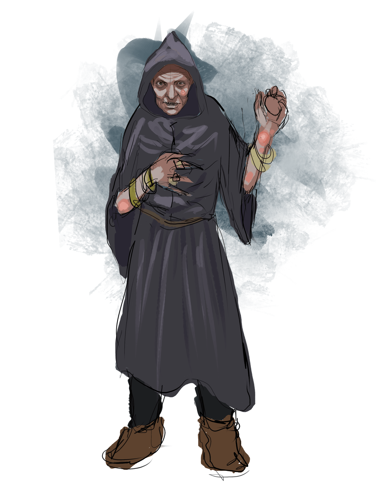

Wendigola
elderly human
neutral
Level 0 civilian
Pronouns:
she/her
Occupations:
Widow, hermitess, suspected witch
Armor Class
10
Hit Points
10 (TODO Hitdice)
Speed
30.
STR
7 ()
DEX
12
CON
14
INT
9
WIS
9
CHA
4
Saving Throws
TODO Saving Throws
Skills
Alchemy
Proficiencies
Damage Immunities
TODO Damage Immunities
Condition Immunities
TODO Condition Immunities
Senses
TODO Senses
Languages
Human ,
Adjectives
Creepy ,
Special Abilities
Special Equipment
- The egg is not cursed... Or is it?
Combat Tactics
Wendigola will avoid combat at all costs due to her frail frameActions
Factions
